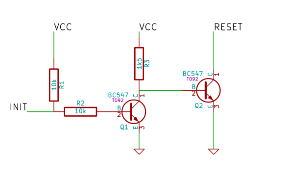
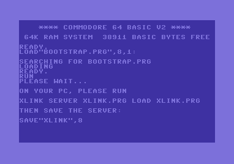

Xlink is a data transfer and control system for the Commodore 64.
The Commodore 64 is connected to a PC via a via a custom build USB adapter or a simple parallel port cable. A command-line client is used on the PC to transfer data to and from C64 memory, run programs on the C64, write or read from an attached disk drive or to initiate a hardware reset.
An interrupt-driven server on the Commode 64 listens to and executes the commands send by the client. The server can be temporarily loaded on the C64, or it can be permanently installed using a customized kernal rom. The latter has the advantage of being instantly available after power-up or reset, which makes the Xlink system well suited for fast and easy cross development using a PC and a real Commodore 64.
The implementation of the underlying functionality is distributed as a shared library, making the functionality provided by Xlink readily available for use in other programs.
The Xlink client software and library is supported under Linux and Windows.
There are two versions of the USB Adapter. The simple version is implemented using the V-USB Library on an ATMega8-16. The advantage is that the microcontroller is available as a DIP package, making the adapter trivial to build on a perfboard. The downside is that the resulting adapter is a low-speed USB device and thus transfer rates are limited to about 8kb/sec.
The advanced version implements a full-speed USB 2.0 device using Dean Cameras LUFA library on an at90usb162 chip, allowing maximum transfer rates up to about 20kb/sec (This is as fast as the C64 can shove the data into memory). Unfortunately the chip is only available in SMD packaging (TQFP-32), and thus building the adapter requires a proper pcb and some soldering skill.
Schematics for both versions as well as a pcb layout for the advanced version are included in the source distribution.
This is a simple 8-bit parallel transfer cable connecting the PC Parallel Port to the C64 userport:
| PC Parallel Port | C64 Userport |
|---|---|
| GND (18-25) | GND (1, 12, A, N) |
| D0 (2) | PB0 (C) |
| D1 (3) | PB1 (D) |
| D2 (4) | PB2 (E) |
| D3 (5) | PB3 (F) |
| D4 (6) | PB4 (H) |
| D5 (7) | PB5 (J) |
| D6 (8) | PB6 (K) |
| D7 (9) | PB7 (L) |
| BUSY (11) | PA2 (M) |
| STROBE (1) | /FLAG2 (B) |
A shielded cable is recommended. The cable shield should be connected to ground on both sides. A 0.1uF capacitor between shield and ground at the c64 side can also help to reduce noise. Improper shielding will most likely cause transfer errors.
WARNING:
There is no electrical protection of any kind. The parallel port pins are directly connected to port B of CIA2.
Always power down both the PC and C64 before inserting/removing the cable. Turn off the C64 during boot, reboot or shutdown of the PC.
This circuit is required for the parallel port cable in order to perform a hardware reset at the C64 userport:

| Line | Port | Pin |
|---|---|---|
| INIT | Parallel Port | 16 |
| RESET | Userport | 3 |
| VCC | Userport | 2 |
| GND | Userport | 1, 12, A, N |
NOTE: The above circuit holds the C64 RESET line
low as long as the parallel port INIT line is held low. The parallel
port lines themselves may have been left in an unknown/random state
after the PC wakes up from suspend or after the port has been accessed
by another program. This means that if the INIT line happens to be
permanently low, the C64 will remain in a state of permanent reset and
appear frozen or even dead (showing just a black screen after power
up). In this case running xlink reset will bring the
parallel port lines back to a defined state and the C64 will resume
operation.
If you have no way to transfer the ram-based server program to your C64 you can simply type in the following program:
10 print"please wait...":print
20 d=12288:s=184:c=0:l=1000:m=0
30 for i=0 to s-1:for k=0 to 7
40 read v:poke d+i+k,v:c=c+v:next k
50 read v:if c<>v then print"data checksum error on line";l:end
60 c=0:l=l+1:i=i+7:nexti
70 print"on your pc, please run":print
80 print"xlink server xlink.prg load xlink.prg":print
90 print"then save the server:":print
100 print"save"chr$(34)"xlink"chr$(34)",8"chr$(145)
110 sys 12288
120 end
1000 data 76,58,48,173,13,221,41,16,646
1001 data 240,249,174,1,221,173,0,221,1279
1002 data 73,4,141,0,221,96,141,1,677
1003 data 221,173,0,221,73,4,141,0,833
1004 data 221,173,13,221,41,16,240,249,1174
1005 data 96,173,0,221,73,4,141,0,708
1006 data 221,96,173,13,221,41,16,240,1021
1007 data 249,96,169,0,141,3,221,173,1052
1008 data 2,221,9,4,141,2,221,173,773
1009 data 13,221,120,32,50,48,172,1,657
1010 data 221,32,41,48,192,1,208,243,986
1011 data 32,95,48,88,76,128,164,169,800
1012 data 11,141,17,208,32,148,48,160,765
1013 data 0,32,50,48,173,1,221,145,670
1014 data 193,32,41,48,230,193,208,2,947
1015 data 230,194,165,194,197,196,208,233,1617
1016 data 165,193,197,195,208,227,165,195,1545
1017 data 133,45,165,196,133,46,169,27,914
1018 data 141,17,208,96,32,3,48,134,679
1019 data 254,32,3,48,134,255,32,3,761
1020 data 48,134,193,134,251,32,3,48,843
1021 data 134,194,134,252,32,3,48,134,931
1022 data 195,32,3,48,134,196,96,0,704
This program will first install a rudimentary server that can be used to upload the real server program. Just follow the on-screen instructions:

xlink 1.0 Copyright (C) 2014 Henning Bekel <h.bekel@googlemail.com>
Usage: xlink [<opts>] [<command> [<opts>] [<arguments>]]...
Options:
-h, --help : show this help
-q, --quiet : show errors only
-v, --verbose : show verbose debug output
-d, --device <device> : transfer device (default: /dev/xlink)
-a, --address <start>[-<end>] : C64 address/range (default: autodetect)
-s, --skip <n> : Skip n bytes of file
-m, --memory : C64 memory config (default: 0x37)
-b, --bank : C64 memory bank (unused)
Commands:
help [<command>] : show detailed help for command
bootloader : enter dfu-bootloader (USB devices only)
benchmark : test/measure transfer speed
ping : check if the server is available
reset : reset C64 (only if using reset circuit)
ready : try to make sure the server is ready
identify : identify remote machine and server
load [<opts>] <file> : load file into C64 memory
save [<opts>] <file> : save C64 memory to file
poke [<opts>] <addr>,<val> : poke value into C64 memory
peek [<opts>] <addr> : read value from C64 memory
jump [<opts>] <addr> : jump to specified address
run [<opts>] [<file>] : run program, optionally load it before
<file>... : load file(s) and run last file
@[<dos-command>] : read drive status or send dos command
backup <file> : backup disk to d64 file
restore <file> : restore d64 file to disk
verify <file> : verify disk against d64 file
XLINK Hardware, Firmware, Client, Server and Library
Copyright (c) 2014, Henning Bekel
All rights reserved.
Redistribution and use in source and binary forms, with or without
modification, are permitted provided that the following conditions are
met:
1. Redistributions of source code must retain the above copyright
notice, this list of conditions and the following disclaimer.
2. Redistributions in binary form must reproduce the above copyright
notice, this list of conditions and the following disclaimer in the
documentation and/or other materials provided with the
distribution.
THIS SOFTWARE IS PROVIDED BY THE COPYRIGHT HOLDERS AND CONTRIBUTORS
"AS IS" AND ANY EXPRESS OR IMPLIED WARRANTIES, INCLUDING, BUT NOT
LIMITED TO, THE IMPLIED WARRANTIES OF MERCHANTABILITY AND FITNESS FOR
A PARTICULAR PURPOSE ARE DISCLAIMED. IN NO EVENT SHALL THE COPYRIGHT
OWNER OR CONTRIBUTORS BE LIABLE FOR ANY DIRECT, INDIRECT, INCIDENTAL,
SPECIAL, EXEMPLARY, OR CONSEQUENTIAL DAMAGES (INCLUDING, BUT NOT
LIMITED TO, PROCUREMENT OF SUBSTITUTE GOODS OR SERVICES; LOSS OF USE,
DATA, OR PROFITS; OR BUSINESS INTERRUPTION) HOWEVER CAUSED AND ON ANY
THEORY OF LIABILITY, WHETHER IN CONTRACT, STRICT LIABILITY, OR TORT
(INCLUDING NEGLIGENCE OR OTHERWISE) ARISING IN ANY WAY OUT OF THE USE
OF THIS SOFTWARE, EVEN IF ADVISED OF THE POSSIBILITY OF SUCH DAMAGE.
The USB adapter firmware is implemented using the LUFA Library by Dean Camera:
LUFA Library
Copyright (C) Dean Camera, 2013.
dean [at] fourwalledcubicle [dot] com
www.lufa-lib.org
Permission to use, copy, modify, and distribute this software and its
documentation for any purpose is hereby granted without fee, provided
that the above copyright notice appear in all copies and that both
that the copyright notice and this permission notice and warranty
disclaimer appear in supporting documentation, and that the name of
the author not be used in advertising or publicity pertaining to
distribution of the software without specific, written prior
permission.
The author disclaims all warranties with regard to this software,
including all implied warranties of merchantability and fitness. In
no event shall the author be liable for any special, indirect or
consequential damages or any damages whatsoever resulting from loss of
use, data or profits, whether in an action of contract, negligence or
other tortious action, arising out of or in connection with the use or
performance of this software.
© 2015 Henning Bekel h.bekel@googlemail.com. All rights reserved.